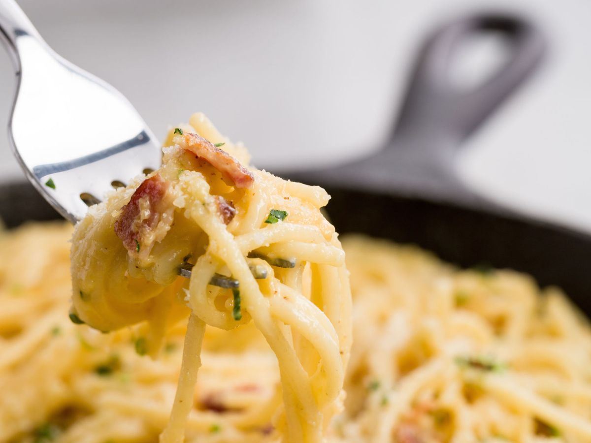

Spaghetti Carbonara

Description
This spaghetti carbonara is delicious, and isn't too difficult to make or time consuming either. Enjoy!
Ingredients
- 1 lb Thick Cut Bacon
- 4 Garlic Cloves, finely minced
- 1 tsp Red Pepper Flakes
- 4 Egg Yolks
- 2 Whole Eggs
- 1 lb Spaghetti
- 2 cups Finely Grated Parmesan
Steps
- Cut raw bacon into small pieces. Place into a small pot and heat over medium heat. Cook until almost completely crispy. For the last 30 seconds, add in finely minced garlic and red pepper flakes and cook until fragrant. Drain all with a slotted spoon on a paper towel.
- Boil spaghetti until al dente and reserve 1 cup cooking liquid.
- In a large bowl, whisk together eggs, yolks, salt to taste, about half of the parmesan, and the cooled bacon/garlic mixture.
- When the pasta is done, dump it into the bowl with the egg mixture and immediately start tossing. Add remaining grated parm as you toss and thin with pasta water as needed. Toss until it is your desired consistency. Taste and adjust seasoning.